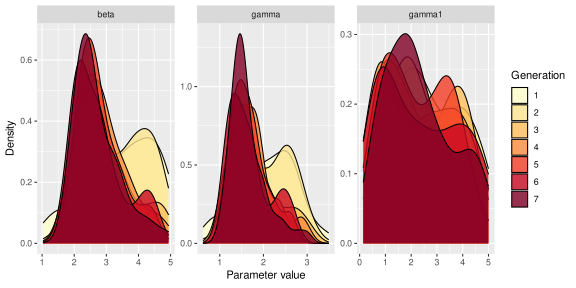
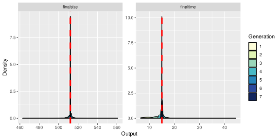
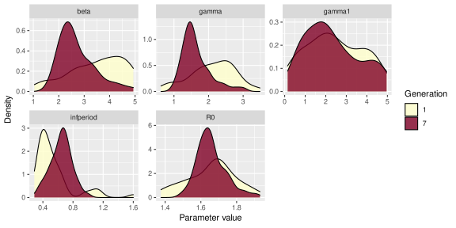

3 Approximate Bayesian Computation
Here we will run the ABC-SMC routine of Toni et al. (2009). Firstly, load the SimBIID library:
Note: in all the following examples I have used a low number of particles to speed things up. In practice you would want to use many more to ensure better approximations.
3.1 Simulation model
In order to use the any ABC routine, we require a simulation model. Here we will use the approach described in the previous chapter, and specify a model using the mparseRcpp() function.
## setup simulation model
transitions <- c(
"S -> beta * S * I / (S + I + R + R1) -> I",
"I -> gamma * I -> R",
"R -> gamma1 * R -> R1"
)
compartments <- c("S", "I", "R", "R1")
pars <- c("beta", "gamma", "gamma1")
model <- mparseRcpp(
transitions = transitions,
compartments = compartments,
pars = pars
)3.2 Arguments to ABCSMC() function
The ABC-SMC routine is coded in a function called ABCSMC(). If you look at the help file for the ABCSMC() function (e.g. ?ABCSMC) you will see the main arguments, which are summarised below:
x: a named vector with entries containing the observed summary statistics to match to. Names must match totolsargument.priors: adata.framecontaining columns:parnames,dist,p1andp2, with number of rows equal to the number of parameters. The columnparnamesimply gives names to each parameter for plotting and summarising. Each entry in thedistcolumn must contain one ofc("unif", "norm", "gamma"), and the correspondingp1andp2entries relate to the hyperparameters (lower and upper bounds in the uniform case; mean and standard deviation in the normal case; and shape and rate in the gamma case).func: function that runs the simulator and checks whether the simulation matches the data. The first four arguments must bepars,data,tolsandu. If the simulations do not match the data then the function must return anNA, else it must returns a vector of simulated summary measures. In this latter case the output from the function must be a vector with length equal toncol(data)and with entries in the same order as the columns ofdata.u: a named vector of initial states.tols: a vector or matrix of tolerances, with the number of rows defining the number of generations required, and columns defining the summary statistics to match to. If a vector, then the length determines the summary statistics. The columns/entries must match to those inx.ptols: the proportion of simulated outcomes at each generation to use to derive adaptive tolerances.ngen: the number of generations of ABC-SMC to run.npart: an integer specifying the number of particles.
3.2.1 Summary statistics
The first argument to ABCSMC() must be either an ABCSMC object (we will come to this later), or a named vector with entries containing the observed summary statistics to match to. The data here are time-series counts of bed-rest and convalescence events. A very simple option would be to match to:
- final epidemic size (i.e. total number of removals across the time course of the epidemic), and
- time of final removal (in this case when the epidemic process ceased).
Although simple, these two measures serve to give us some information on both the length and magnitude of the epidemic, and should contain at least some useful information about the parameters. In this case the final removal time is 15 days and the final epidemic size is 512 individuals. Let’s create this data object:
## finalsize finaltime
## 512 153.2.2 Prior distributions
The second argument to the ABCSMC() function must be a data.frame containing information about the prior distributions for the parameters. Here we will let \(\beta \sim U(0, 5)\), \(\gamma \sim U(0, 5)\) and \(\gamma_1 \sim U(0, 5)\). We can specify this as follows:
## set priors
priors <- data.frame(parnames = c("beta", "gamma", "gamma1"),
dist = rep("unif", 3),
stringsAsFactors = F)
priors$p1 <- c(0, 0, 0)
priors$p2 <- c(5, 5, 5)
priors## parnames dist p1 p2
## 1 beta unif 0 5
## 2 gamma unif 0 5
## 3 gamma1 unif 0 5Here the first column corresponds to the names of the parameters, the second to the type of prior distribution ("unif", "gamma" or "norm"), and the final two columns to the hyperparameters (upper and lower limits for "unif"; shape and rate for "gamma"; or mean and standard deviation for "norm").
3.2.3 Simulation function
The third argument to ABCSMC() is a function that runs the simulator and checks whether the simulation matches the data. The first four arguments to this function must be pars, data, tols and u (but you can pass more arguments in if required—see below). Within the function:
pars: is a vector of parameters (the order must match the order of thepriorsargument to theABCSMC()function);data: a vector of data points to match to (must match the order of thexargument to theABCSMC()function);tols: a vector of tolerances (must match the order ofdata);u: a vector of initial states (must match order of theuargument to theABCSMC()function).
Please note: there is no internal check on you getting these orders correct. It is up to you to be careful when setting up this function!
If the simulations do not match the data then the function must return an NA, else it must returns a vector of simulated summary measures. In this latter case the output from the function must be a vector with length equal to length(data) and with entries in the same order as data. It is possible to add further arguments to this function, as long as they appear after pars, data, tols and u. For example, in our case we are going to pass our simulation model in as an additional argument called model (see below).
Pre-compilation: For speed, the simulation models in
SimBIIDare coded using C/C++ (specifically through the use of the wonderfulRcpppackage). This requires that the code is compiled into a binary file before running. Therun()function does this automatically. However, there is an overhead attached with this, and since the ABC-SMC function needs to run the model lots of times, if we used therun()function then we would have to compile the model lots of times, which is very costly.Instead, we will use a function in
SimBIIDcalledcompileRcpp(), which pre-compiles the model into an R function that we can call within our simulation code without having to re-compile the model each time. Hence, to speed things up here we will not use therun()function directly, rather we will create the model usingmparseRcpp(), and then compile it usingcompileRcpp(), before passing the compiled model to theABCSMC()function.
Hence, to compile the model we can run:
## function (pars, tstart, tstop, u)
## .Call(<pointer: 0x7f0ef60ede50>, pars, tstart, tstop, u)You can see that the compiled model is an R function that takes four arguments, pars, tstart, tstop and u. Convenient eh?
Now we generate a function that runs the simulations, extracts the relevant summary statistics, and returns the correct output. Notice that we pass an additional argument model that contains our simulation function generated above.
## set up function to perform simulation and check matching
simFlu <- function(pars, data, tols, u, model) {
## run model
sims <- model(pars, 0, data[2] + tols[2], u)
## 'sims' is a vector of outputs of the form:
## completed (1/0), t, S, I, R, R1
if(sims[1] == 0) {
## if epidemic still going at
## time = finaltime + tol, then reject
return(NA)
} else {
## extract finaltime and finalsize
finaltime <- sims[2]
finalsize <- sims[6]
}
## return vector if match, else return NA
if(all(abs(c(finalsize, finaltime) - data) <= tols)){
return(c(finalsize, finaltime))
} else {
return(NA)
}
}Note: You can also use you own simulation code in this function, as long as you adhere to these rules, you do not have to use
mparseRcpp()(you could use theSimInfpackage here for example).
The simFlu function we have made therefore returns an NA if the simulations do not match the summary statistics, or a vector of simulated summary statistics if it does.
3.2.4 Initial states
Next we need to specify the initial states of the system (as a named vector):
3.2.5 Tolerances
We can specify the tolerances in one of two ways:
- either as a
matrixof tolerances to match to (through thetolsargument). Note that these must be decreasing over each generation of the ABC-SMC algorithm. - Alternatively, we can specify the proportion of simulated outcomes at each generation to use to derive adaptive tolerances (through the
ptolsargument). For example, ifptols = 0.5, then we choose tolerances at the \(t\)th generation such that we would have accepted 50% of the simulations at the \((t - 1)\)th generation. Note that if we wish to use this latter approach, then we will need to give the algorithm some initial tolerances for generation 1 through thetolsargument.
Note: the names and order of the tolerances must match the
xargument.
We will use the second approach, so need to specify a set of tolerances for the first generation only:
3.3 Running ABCSMC()
Now let’s run the routine for ngen = 4 generations of ABC, with ptols = 0.2 using npart = 50 particles. Notice that we can pass the additional arguments that simFlu() needs (model in this case) as additional arguments passed to ABCSMC():
## run ABC-SMC algorithm
post <- ABCSMC(
x = sumStat,
priors = priors,
func = simFlu,
u = iniStates,
tols = tols,
ptols = 0.2,
ngen = 4,
npart = 50,
model = model
)## Generation 1, accrate = 0.021, time = 0.97 secs## Generation 2, accrate = 0.016, time = 4.7 secs## Generation 3, accrate = 0.0034, time = 16 secs## Generation 4, accrate = 0.00072, time = 74 secs##
## Final run time = 96 secsNote: these algorithms are computationally intensive, so if you can spare the processing power, it’s often good to set
parallel = Tto use parallel processing. However, depending on the model and your architecture, it’s not always faster, so you might need to use your judgement. Windows users commiserate: your architecture doesn’t support themclapply()function (from theparallelpackage) so you’ll always have to run in serial I’m afraid…
We can plot the approximate posterior distributions over the generations as follows:

We can plot the simulated summary statistics from the accepted particles at each generation as:

Given the speed of the simulations, let’s try running for a few more generations. We can pass the current ABCSMC object (post here) back into the ABCSMC() function and run for a few more generations:
## Number of cores: 24## Generation 5, accrate = 0.00016, time = 47 secs## Generation 6, accrate = 5.7e-05, time = 89 secs## Generation 7, accrate = 1e-05, time = 620 secs##
## Final run time = 760 secs

Notice how the approximate posteriors are tightening up as we require to match more precisely. Notice also that the acceptance rate of each generation of ABC-SMC drops as the tolerances decrease. In fact we can see this more clearly if we plot just the first and final generation. Fortunately, we can choose which generations to plot using the gen argument to plot() e.g.


We can also produce joint density plots (if the GGally package is installed):

A call to summary() produces weighted estimates for the posterior means and standard deviations for the parameters in the final generation, along with an estimate of the effective sample size:
## Mean SD ESS
## beta 2.905822 0.7905814 33.51667
## gamma 1.714179 0.4438832 33.51667
## gamma1 2.101349 1.3339654 33.516673.4 Calculate posterior for transformations of parameters
We might also want to calculate posterior distributions for transformations of the parameters. This can be done by specifying a transfunc argument to the summary() method (this function must return a data.frame object, and the arguments to the function must match to names of the parameters used in the transformation). For example, as discussed in the lecture, if we have \(\beta\) and \(\gamma\), then we can also calculate the marginal posterior distribution for \(R_0\) (here defined as \(R_0 = \frac{\beta}{\gamma}\)), as well as, let’s say, the length of the infectious period. Hence we must define a function with arguments beta and gamma (which match to parameters in the model), and returns a data.frame of transformed parameters:
## function to calculate R0 and infectious period
R0fn <- function(beta, gamma) {
data.frame(R0 = beta / gamma, infperiod = 1 / gamma)
}
summary(post, transfunc = R0fn)## Mean SD ESS
## beta 2.9058222 0.7905814 33.51667
## gamma 1.7141793 0.4438832 33.51667
## gamma1 2.1013491 1.3339654 33.51667
## R0 1.6911942 0.1081999 33.51667
## infperiod 0.6193271 0.1458871 33.51667We can plot distributions for transformed variables in a similar way:

Note that we can also ask various probabilistic questions of these distributions, since we are using a Bayesian framework. For example, what is the probability that \(R_0\) is greater than one? A Monte Carlo estimate of this can be produced simply by counting the proportion of the posterior samples for \(R_0\) that lie above one. (Note: this would be slightly biased, since we actually have unequal weights for these samples. However, we can use our transformation function above to generate a weighted estimate as below.)
## function to calculate whether R0 > 1
R0gt <- function(beta, gamma) {
data.frame(R0gt = as.numeric((beta / gamma) > 1))
}
summary(post, transfunc = R0gt)## Mean SD ESS
## beta 2.905822 7.905814e-01 33.51667
## gamma 1.714179 4.438832e-01 33.51667
## gamma1 2.101349 1.333965e+00 33.51667
## R0gt 1.000000 1.110223e-16 33.516673.5 Adding additional matching criteria
Matching to final epidemic size and the date of the final removal only is quite crude. We could also incorporate information regarding the observed \(R\) curves. One option would be to generate some summary measure of distance between the simulated and observed curves, something like a sum-of-squared differences e.g. \[ S_R = \sum_{t = 1}^T \left(R_t - R^\prime_t\right)^2, \] where \(R_t\) is the observed counts at time \(t\), and \(R^\prime_t\) are the corresponding simulated counts at time \(t\), and \(T\) is the total number of time points. Therefore if the simulated time-series matches the data exactly then \(S_R = 0\); with large values of \(S_R\) corresponding to poor matches between the simulated and observed counts.
To calculate \(S_R\), we have to re-compile the model with the tspan option turned on.
## specify model
model <- mparseRcpp(
transitions = transitions,
compartments = compartments,
pars = pars,
tspan = T
)
## compile into R function
model <- compileRcpp(model)
model## function (pars, tstart, tstop, u, tspan)
## .Call(<pointer: 0x7f0ef6074c50>, pars, tstart, tstop, u, tspan)You can now see that the new function has an additional tspan argument, which corresponds to a vector of times that we wish to return the states of the system. We therefore also have to pass a tspan argument to our simFlu function. In addition, we will also need to pass the observed time-series counts to this function (which we call R here).
## set up function to perform simulation and check matching
simFlu <- function(pars, data, tols, u, model, tspan, R) {
## run model
sims <- model(pars, 0, data[2] + tols[2], u, tspan)
## 'sims' is now a list, with the first element a vector
## of the form: completed (1/0), t, S, I, R, R1
## and the second element is a matrix containing the
## time-series counts
simSum <- sims[[1]]
counts <- sims[[2]]
if(simSum[1] == 0) {
## if epidemic still going at
## time = finaltime + tol, then reject
return(NA)
} else {
## extract finaltime and finalsize
finaltime <- simSum[2]
finalsize <- simSum[6]
## calculate sum-of-squared distances of
## simulations from observations
SR <- sum((R - counts[, 4])^2)
}
## return vector if match, else return NA
if(all(abs(c(finalsize, finaltime, SR) - data) <= tols)){
return(c(finalsize, finaltime, SR))
} else {
return(NA)
}
}To create some initial tolerances, let’s append an initial value for SR to our original tols object:
In practice, we cannot derive a measure of \(S_R\) from the observed data alone, but we know that if the simulations match the observed data exactly, then \(S_R = 0\), so we use this as our target, and append to the sumStat vector accordingly:
Now we can run our routine again (notice the final row below contains the additional arguments we now need for simFlu()):
## run ABC-SMC algorithm
post <- ABCSMC(
x = sumStat,
priors = priors,
func = simFlu,
u = iniStates,
npart = 50,
tols = tols,
ptols = 0.2,
ngen = 3,
parallel = T,
model = model, tspan = flu$day, R = flu$in_bed
)## Number of cores: 24## Generation 1, accrate = 0.022, time = 0.38 secs## Generation 2, accrate = 0.022, time = 0.66 secs## Generation 3, accrate = 0.0066, time = 2 secs##
## Final run time = 3.1 secs

Notice that the \(S_R\) metric doesn’t get very close to 0 here. This is because the metric is a one-sided metric and so we always expect some variability away from zero. Due to the stochastic nature of the model, to get a metric close to zero we would have to match almost all time points exactly, which would be very computationally expensive. Hence we use this to tweak the outputs, but most of the variability is being constrained by the finaltime and finalsize metrics here. However, we can see that the addition of the \(S_R\) metric seems to tighten up the posterior for \(\gamma_1\). Why is this do you think? Ideally you would want to run for more generations to tighten up each of these outputs.
Remember: here we have used a low number of particles to speed things up. In practice you would want to use many more to ensure better approximations.
References
Toni, Tina, David Welch, Natalja Strelkowa, Andreas Ipsen, and Michael P.H. Strumpf. 2009. “Approximate Bayesian Computation Scheme for Parameter Inference and Model Selection in Dynamical Systems.” Journal of the Royal Society Interface 6: 187–202.